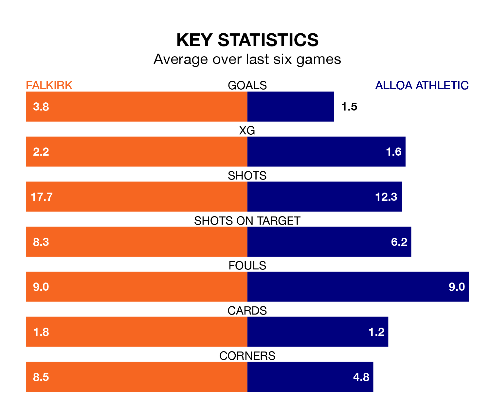

Falkirk host Alloa Athletic in Saturday's match at the Falkirk Community Stadium looking to bounce back from defeat last time out in League One.
The Bairns, who sit top of the league after 35 games, fell to a 3-3 away defeat to Annan Athletic on April 27.
They face an Alloa side who also lost their last match, a 1-0 defeat to Hamilton Academical, and who sit third in the table.
With 94 goals in 35 games so far this season, Falkirk are the league's highest scorers with 2.7 goals per game. And they are conceding fewer than average, letting in 26 goals at a rate of 0.7 per game.
Alloa are also above average scorers, with 1.7 goals per game, compared to a league average of 1.6. They have conceded 1.5 goals per game.
In Callumn Morrison, the Bairns have the league's sharpest shooter so far this season. He has notched 23 goals in 31 appearances.
His goal rate of one every 109 minutes is quicker than that of Bobby Wales, Athletic's top scorer with a goal every 178 minutes, and a total of 12 goals in 25 games.
In the last 10 years, Falkirk and Alloa have played each other on 24 occasions. Falkirk won 17 of them, Alloa three, and they drew four times.
On average, the Bairns scored 2.2 goals and Alloa 0.8 in those matches.
Their last meeting was on January 27, when Falkirk won 5-0 away.
The hosts are in good form in League One, with four wins and two draws from their last six games.
With two wins and two draws over that period, the away team's form is much worse – they have taken eight points from 18, compared to Falkirk's 14.
Updated: 10:44 (UTC), 30/04/24